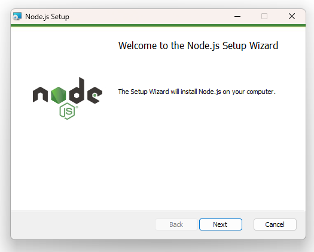
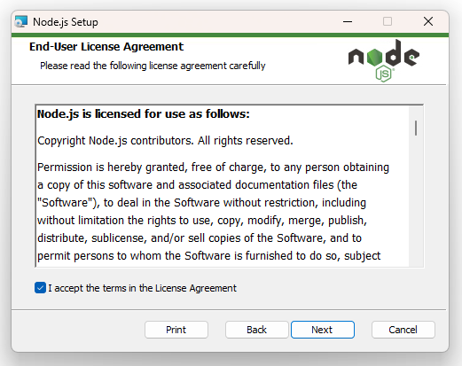
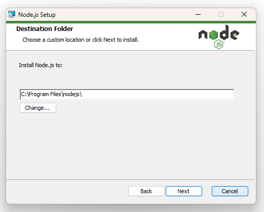
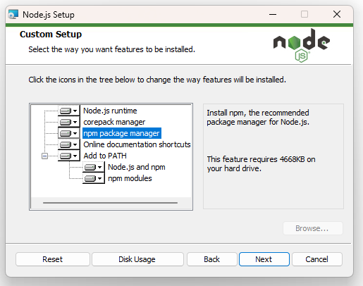
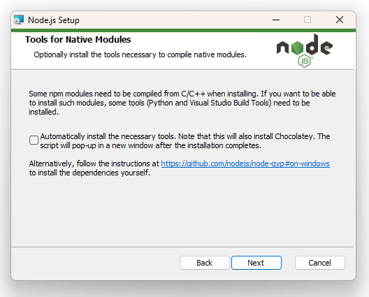
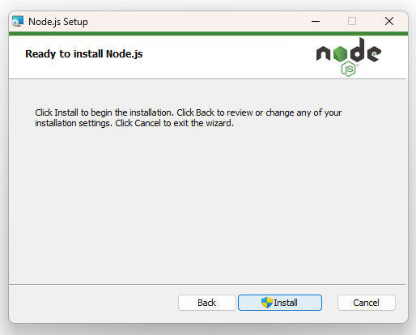
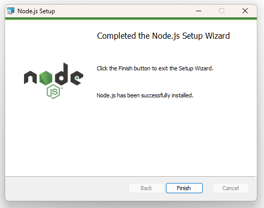

Modificacions de SASS
Instal·lació
En aquest apartat s'explica com instal·lar i configurar l'entorn necessari per a desenvolupar aplicacions amb Sass, tant en sistemes operatius Linux com Windows.
Instal·lació Linux
Prerequisits
Node.js i Node Packet Manager permeten la instal·lació i execució de Sass. NodeJS és un entorn d'execució que permet utilitzar JavaScript fora del navegador, la qual cosa permet també desenvolupar aplicacions en el costat del servidor. Per altra banda, NPM (Node Packet Manager) és el gestor de paquets per a Node.js, el qual permet instal·lar, actualitzar i gestionar llibreries i dependències per a projectes desenvolupats amb JavaScript.
A continuació s'ofereixen els passos a seguir per a dur a terme la instal·lació de NodeJs i NPM en Linux. Aquests passos poden variar en funció de la distribució que s'estiga utilitzant.
En el següent enllaç es troben les instruccions per a descarregar i instal·lar les últimes versions de Node.js.
Una vegada instal·lat Node.js és el moment d'instal·lar el gestor de paquets npm:
NPM s'instal·la automàticament amb la instal·lació de Node.js. Si no s'instal·la automàticament, és possible instal·lar-lo manualment amb el següent comandament:
| Bash | |
|---|---|
Una vegada instal·lats Node i NPM cal verificar les versions instal·lades executant els següents comandaments en el terminal:
Sass
Per instal·lar Sass en Linux (Ubuntu) s'han de seguir els passos següents:
-
Actualitzar el sistema: Obrir una terminal i executar els comandaments següents per assegurar que el sistema estiga actualitzat:
-
Instal·lar Sass amb NPM: Una vegada instal·lat Node.js i NPM, per a instal·lar Sass globalment cal utilitzar el següent comandament:
Bash
Nota
El paràmetre -g indica que la instal·lació del paquet es fa de manera global, és a dir, estarà disponible per a tots els projectes i usuaris del sistema, no només per al projecte actual.
-
Verificar la instal·lació: S'ha de comprovar si Sass s'ha instal·lat correctament executant el seguent comandament:
Bash
Instal·lació Windows
Prerequisits
Node.js i Node Packet Manager permeten la instal·lació i execució de Sass. NodeJS és un entorn d'execució que permet utilitzar JavaScript fora del navegador, la qual cosa permet també desenvolupar aplicacions en el costat del servidor. Per altra banda, NPM (Node Packet Manager) és el gestor de paquets per a Node.js, el qual permet instal·lar, actualitzar i gestionar llibreries i dependències per a projectes desenvolupats amb JavaScript.
-
NodeJS:
Per a instal·lar Node.js, es recomana descarregar la versió LTS (Long Term Support) per a més estabilitat:
A continuació es mostren els passos per a procedir amb la seua instal·lació:

Instal·lació NodeJS - Pas 1 
Instal·lació NodeJS - Pas 2 
Instal·lació NodeJS - Pas 3 
Instal·lació NodeJS - Pas 4 
Instal·lació NodeJS - Pas 5 
IInstal·lació NodeJS - Pas 6 
Instal·lació NodeJS - Pas 7
A continuació instal·larem NPM (Node Packet Manager):
Per a instal·lar NPM en Windows, normalment s'inclou automàticament amb la instal·lació de Node.js. Després d'instal·lar Node.js, pots verificar que NPM està disponible obrint una terminal i executant:
| Bash | |
|---|---|
Si per algun motiu NPM no s'ha instal·lat correctament, pots descarregar-lo i instal·lar-lo manualment des de la pàgina oficial de NPM.
Consell
Si tens problemes amb la instal·lació, assegura't que la variable d'entorn PATH inclou la ruta on s'ha instal·lat Node.js i NPM.
Una vegada instal·lats NodeJS i NPM verificarem les versions instal·lades executant els següents comandaments en el terminal:
Sass
Per instal·lar Sass en Windows, cal seguir els següents passos:
-
Obrir una terminal: Amb PowerShell o la terminal de Windows.
-
Instal·lar Sass amb NPM: Executar el següent comandament permet instal·lar Sass:
Bash
Nota
El paràmetre -g indica que la instal·lació del paquet es fa de manera global, és a dir, estarà disponible per a tots els projectes i usuaris del sistema, no només per al projecte actual.
-
Verificar la instal·lació: Comprova que Sass s'ha instal·lat correctament amb:
Bash
Canvis en la sintaxi
Novetats
No ha canviat la sintaxi essencial de Sass, però sí han canviat coses importants en l’ús recomanat i en algunes construccions clau des que Ruby Sass va desaparèixer i Dart Sass és l’única implementació oficial.
T’ho explique per capes, de més a menys impacte.
1. EL MÉS IMPORTANT: @import ESTÀ OBSOLET
Abans (clàssic, Ruby Sass)
Ara (Dart Sass – correcte)
🔴 @import:
- ❌ obsolet
- ❌ generarà warnings
- ❌ s’eliminarà en el futur
🟢 @use:
- ✔️ és modular
- ✔️ evita col·lisions de noms
- ✔️ és obligatori en projectes nous
2. CANVI DE MODEL MENTAL: NAMESPACES
Abans
Ara amb @use
➡️ Tot entra amb prefix, excepte si uses as * (no recomanat).
3. @forward: REEXPORTAR MÒDULS
Nou concepte (no existia en Ruby Sass):
I després:
| SCSS | |
|---|---|
➡️ Permet crear APIs de Sass netes ➡️ Molt útil en projectes grans o docència avançada
4. FUNCIONS I MIXINS: SINTAXI IGUAL, US DIFERENT
Mixins (igual)
Ús
✔️ No ha canviat la sintaxi
5. FUNCIONS CORE: ARA AMB MÒDULS
Abans
| SCSS | |
|---|---|
Ara (recomanat)
📌 Les funcions globals encara funcionen, però:
- estan deprecated
- millor ensenyar el model modular
6. DIVISIÓ / JA NO ÉS DIVISIÓ
Aquest és un canvi trencador.
Abans
| SCSS | |
|---|---|
Ara
➡️ / ara és CSS literal, no matemàtica Sass
➡️ Aquest canvi sí causa errors reals en codi antic
7. NESTING: MATEIXA SINTAXI, PERÒ MENYS RECOMANAT
✔️ Encara vàlid ⚠️ Però:
- CSS natiu ja té nesting
- es recomana nesting superficial
8. SASS VS SCSS: CAP CANVI
.sass(indentat) → gairebé en desús.scss→ estàndard actual
La sintaxi no ha canviat ací.
9. RESUM CLAR
❌ El que ja NO s’hauria d’usar
@import- funcions globals (
darken(),lighten()) - divisió amb
/
✅ El que s’ha d’usar ara
@use,@forward- mòduls (
sass:color,sass:math) - namespaces
- SCSS modern
Resum
Ací tens una taula clara, directa i didàctica amb els canvis de sintaxi i d’ús entre Sass “antic” (Ruby Sass) i Sass modern (Dart Sass).
Taula comparativa: Sass antic vs Sass modern
| Aspecte | Sass antic (Ruby Sass) | Sass modern (Dart Sass) | Estat actual |
|---|---|---|---|
| Implementació | Ruby Sass | Dart Sass | Ruby Sass obsolet |
| Forma recomanada | @import |
@use, @forward |
@import deprecated |
| Importació | @import "variables"; |
@use "variables"; |
Canvi obligatori |
| Accés a variables | $color global |
variables.$color |
Namespaces |
| Evitar prefix | — | @use "vars" as *; |
❌ No recomanat |
| Reexportació | ❌ No existia | @forward "vars"; |
Nou concepte |
| Divisió matemàtica | 100px / 2 |
math.div(100px, 2) |
/ ja no divideix |
| Funcions de color | darken() |
color.scale() |
Globals deprecated |
| Funcions globals | Sí | ❌ | Migració recomanada |
| Ús de mòduls | ❌ | sass:color, sass:math |
Model actual |
| Mixins | @mixin, @include |
Igual | Sense canvis |
| Funcions pròpies | @function |
Igual | Sense canvis |
| Nesting | Il·limitat | Recomanat superficial | CSS ja té nesting |
Sintaxi .sass |
Comuna | Residual | En desús |
Sintaxi .scss |
Opcional | Estàndard | Recomanada |
| Tooling | Compass, Ruby | Node, bundlers | Ecosistema nou |
| Rails | Integrat per defecte | Opcional | Menys central |